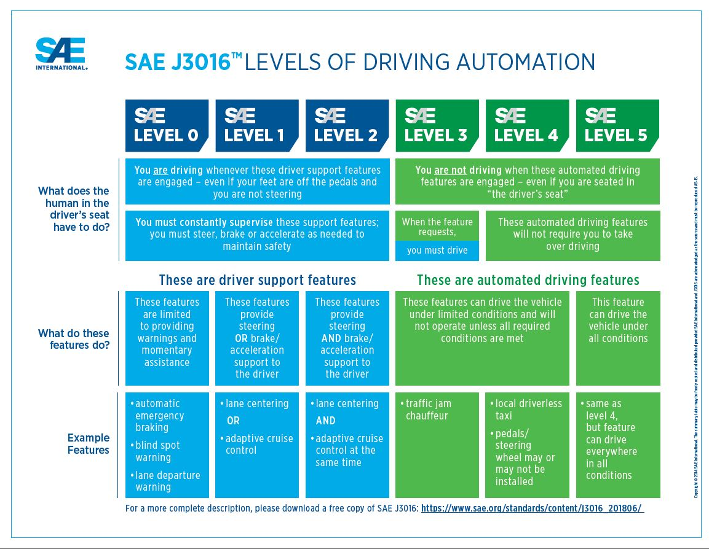
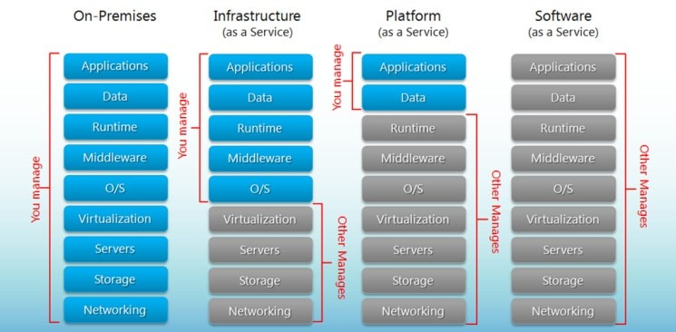
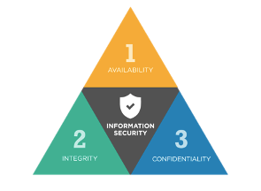

Firstly it is important to understand what autonomous means in this context. People often use “driverless”, “autonomous” and “self-driving” as interchangeable. However there is a big difference in the technology required for an “autonomous” vehicle that can only handle highways, and a truly “driverless” or “self-driving” car that doesn’t even need a steering wheel or human driver to park or navigate (Hicks, M & Fitzsimmons 2019). It seems that all the major tech and ride-share companies including Apple, Google and Uber along with all vehicle manufacturers are working hard on Autonomous Vehicle (AV) technology. AV’s have already been in long trials globally and while we will slowly see them rolled out in limited environments, claims that fully autonomous road vehicles are coming any day now appear overstated. Aside from the technical challenges, their introduction faces legal and ethical hurdles. For example, while the Tesla Model 3 has an “Autopilot” feature that “enables your car to steer, accelerate and brake automatically within its lane” (Tesla, 2020) there is still a need for a driver to be on standby in case something goes wrong – though the Tesla website claims that the driver is just there for legal reasons. What these cars can do is pretty enticing though, including autopark (where you can just jump out on the street and it goes off somewhere to find a spot and park itself), auto lane change and you can even summon your car to come to you. There is an agreed scale to describe levels of driving automation (Shuttleworth, J 2019):
In terms of cars it is suggested that we are currently still at level 2, or partial automation. In Australia, BHP had a fleet of fully automated haul trucks in 2017 (Australian Mine Safety Journal, 2019). While these kinds of vehicles and applications are very impressive, they are essentially on fixed routes and don’t have to battle with the same kinds of variables that will challenge the rollout of driverless vehicles on public roads. Plus, there is a level of remote oversight with operator tracking from a control room. Nevertheless, they can still crash, as happened in March 2019 at the Jimblebar mine site. It was claimed that this was due to wet weather (Williams, P 2019). In Australia and around the world, limited trials of autonomous shuttle buses on fixed routes off the public road network are in operation but getting on to the public road without at least the oversight of a human operator is very rare.
Statements from vehicle manufacturers are particularly optimistic and it is not always easy to tell if this is just market spin. Elon Musk for example claims that fully autonomous cars will be here by the end of this year – 2020 (McDermid, J 2020). While automation is gradually becoming more refined, a full leap to fully driverless cars is a very difficult thing to put a timeline on and there will likely be constraints on where they can go - for example, dirt roads with no line markings. Some of the biggest challenges with AV’s are: Sensors – AV’s need to see the world around them and detect pedestrians, objects including other vehicles, the road itself, and signs. Camera’s let the car see objects. Lidar uses lasers to measure the distance to objects and radar detects objects and tracks them. Data is sent back to the vehicle’s control system to help it make decisions such as when to steer or brake. A fully autonomous car needs to handle a myriad of challenges and operate under all conditions – as you would expect, poor weather, vandalised road signs and paint spilled on the road will negatively impact the accuracy of sensing capability.
Machine Learning – AI and machine learning will be key to AV’s using data from sensors to help it make correct decisions. Still relatively in its infancy, machine learning and deep learning will no doubt expand but while Elon Musk makes this sound just around the corner, others are concerned that machines “don’t have the flexibility of humans when facing a novel situation not included in their training data” (Dickson, B 2020).
Regulation – As we have seen in many new advancing technologies, regulation has a tendency to lag behind innovation. In Australia, the Transforming Mobility report produced in joint by the NRMA, Pricewaterhouse Coopers and Kelios Downer identified more than fifty federal, state and territory laws that would need to be amended due to references made to the “driver” where legislation assumes the driver would be a human (NRMA, 2020).
Consideration around who would be responsible for things like infringements or accident compensation also need to be resolved. Fortunately in Australia we don’t have international land borders, so issues of jurisdiction won’t apply in the same way that would affect European travellers for example.
Social acceptability – much has been made already of the value dilemma’s that may face autonomous vehicles – such as should a driverless car jeopardise its passenger’s safety to save someone else’s life? No doubt there will be incidents that occur that will bring media scrutiny to AV crashes.
The World Health Organization reported that globally 1.35 million people were killed in road traffic accidents in 2016 and this number is growing (WHO, 2018). One would expect that demonstrated improvements in the road toll would make the technology more palatable to the public, but this may take some time. On the other hand, the idea of reading a book or getting home safely after a few drinks does hold some appeal. ADVI (Australia & New Zealand Driverless Vehicle Initiative) research “found that 70% of Australians want a self-driving car able to take over when they feel tired or bored, and just under threequarters (73%) of Australians wanting autonomous vehicle to transport them when they feel physically or mentally unable to drive manually” (ADVI, 2020).
Impacts will vary as technology evolves and there will no doubt be unforeseen positives and negatives. There are concerns now that driverless technology has the potential to put a massive number of people out of work – taxi and ride-share drivers, truck drivers - pretty much anyone who drives a vehicle for work. While taxi driver numbers in Australia are hard to pin down, Uber claim there are 60,000 Uber drivers in Australia (Groenveld, L 2019). Truck drivers number over 200,000 (Job Outlook, 2020). On the flip side, truck driving is among Australia’s most dangerous jobs (Monash University, 2018). Importantly though, these kinds of driving roles are often filled by un-skilled workers or new immigrants, so their loss may have a big impact on those less able to easily transition.
Improved safety is likely. Approximately 95% of accidents are said to be due to driver error and 1,200 Australians are killed or injured in road accidents each year with a $30 billion annual cost of road trauma to the Australian economy (KPMG, 2020). There is general agreement amongst Australian and international experts that 90% of all accidents could be eliminated through advanced driverless vehicle technology. If this does play out there could be major flow on effects to industries including the auto repair sector, medical (due to a reduction in injuries), insurance and the legal profession where car accident claims are a key focus for some lawyers (ADVI, 2020).
Fully autonomous vehicles will also have a big impact on the way we commute. You could be more productive and work or study on the way to the office, or alternatively relax or sleep. For those who don’t drive, have a disability or medical condition, AV’s will offer new opportunities to get around. It is argued by some that a new mobility industry will be borne as lower prices may have a flow on effect to car ownership. If the input costs of a taxi ride no longer included the drivers wage, it seems reasonable to anticipate that fares would be reduced. Interestingly it is noted that you may not own every facet of a driverless car, given that the manufacturers own the software that runs it. In turn it may be illegal for an owner to modify vehicle programming or make a repair (Dia, 2015).
There have also been claims that manufacturers could escape the sales cycle and offer a subscription model (Debord, M 2018). The term ‘mobility as a service’ has now been coined. To what extent vehicles are connected will determine the kind of growth in digital infrastructure that governments will need to commit. This includes sensor networks, roadside equipment such as smart traffic lights that can tell AVs when to stop or go, and high-quality digital mapping (KPMG, 2020). So we would expect to see some major infrastructure works rolled out over time as AV’s gain footing.
In conclusion, there are a lot of different levels of automation, and certainly many features in current cars operate autonomously now – such as lane centering and automated cruise control. A truly driverless car will need to be capable of quite a lot to eliminate the need for human intervention. In the short term at least, higher levels of automation appear most likely in mining and heavy transport where platooning trucks has been talked about for some time (Jones, L 2019). However, whilst car manufacturers might have a tendency to simplify the challenges at least in public statements, there do still appear to be some major obstacles to pass before we have truly driverless vehicles dominating our roads. As has been the case with other disruptive technologies, there will be winners and losers.
Cloud computing is where a network of remotely situated servers is used to host and store a user’s data, which can then be accessed at any time on any machine via an internet browser or an online application. Cloud computing has been around for many years. The first instances of Cloud computing were in the 1960s when organisations could rent time on a mainframe. In 2006, Cloud computing gained popularity with Amazon’s Elastic Compute Cloud (EC2) and Amazon’s Simple Storage Service (S3), online services that enable ‘compute’ in the Cloud and storage in the Cloud respectively. Nowadays, whether you know it or not, most of us use the Cloud – access to the same emails across multiple devices is a prime example of this.
All Clouds are data centres; the difference is where they are located and how they are accessed.
A data centre is the physical location where critical IT infrastructure – such as routers, security devices, switches, servers, app delivery controllers and more – are stored. Some businesses continue to set up and manage their own data centres on premises, whilst others pay large organisations, such as Amazon Web Services (AWS), to use their data centres with the Cloud. Data centres require an uninterrupted power supply, ventilation, cooling and other systems to keep them operational.
Let us look at some other features of Cloud computing that help us understand what is being and can be done with this exciting technology.
Infrastructure as a Service (IaaS) removes the need for an organisation to own and maintain their own data centre. Instead, as mentioned previously, businesses can rent remote data centres that are accessible via an online network. IaaS enables virtualisation and supports services such as networking, storage, computing and much more.
Platform as a Service (PaaS) is an online (Cloud-based) platform, such as OpenShift and Google App Engine, that developers can use to create and host web applications. PaaS removes the need for developers to provision and manage a data centre, administer data bases, server configuration, sharding, load balancing, etc. Cloud enabled platforms allow applications to scale at a moment’s notice. Applications developed using PaaS become SaaS once they are complete.
Software as a Service (SaaS) refers to software that is delivered over the internet, usually for purchase or subscription, such as Dropbox. The Cloud based software remains under the management of the developer, who continues to facilitate the servers, manage data and update the application. The full utility of the software is then accessible on any computer from an internet browser – Dropbox, for example, provides users with storage and access to personal data from any device in any part of the world connected to the internet.
Virtualisation is the process of using software to compartmentalise the hardware of a PC or server to run one or more virtual machines (VMs). For virtualisation to occur, hypervisor software needs to first be installed above the physical server or PC (the host). The hypervisor is responsible for creating and supporting any number of VMs which are collectively called guest machines.
There are two types of hypervisors (HVs):
The greatest advances of cloud computing in the short term are PaaS and SaaS. Increased accessibility to software and platforms via the internet browser reduces the need for end users to download and update software on their own machine, which can chew up bandwidth and be time consuming. “In 10-15 years, people won’t be talking about routers and individual networks, everything will be the network.” (Marcus Vlahovic n.d.).
Edge Computing is a modern way of decentralising data centres. Some of the tasks that have historically been the responsibility of centralised data centres – such as gathering, processing, analysing and storing data – are now being carried out on micro data centres. These are in physically closer proximity to the end user, reducing bandwidth requirements and improving latency. In 2019 an estimated 15 billion edge devices were in use, which is expected to increase to 150 billion by 2025. Enterprises will have millions of devices that need to be managed. Such exponential increases come with a whole host of security issues and diversity issues (different operating systems and hardware). “Hardware won’t be the problem in a decade – software will.” (Matt Riley n.d.)
Another exciting but comparatively distant Cloud enabled technology is Quantum-Computing as a Service. Quantum computing may be able to make calculations and simulate molecules in a way that classical computers cannot. With open source developer tools such as Qiskit, IBM has been leading the way in making Quantum computing accessible over the Cloud from virtually anywhere.
In a world where the IoT and AI are becoming more prolific, CPUs have been identified as physically limiting. GPU computing, in contrast, has already proven its effectiveness over CPUs in areas such as Bitcoin mining and deep learning. Looking ahead, users may have access to data centres full of GPUs over the Cloud.
Previously, most businesses would have to both purchase and store large amounts of IT infrastructure, with the associated expenditure for cooling, ventilation, backup power supplies, and office space. For many businesses today, however, IT needs can be more conveniently and economically met through using IaaS, SaaS and PaaS. Storage and computational power requirements are scalable with just a few clicks. The Cloud reduces capital expenditure and can increase return on investment. Additionally, the Cloud has facilitated greater flexibility in the workplace, making it possible for teams to collaborate virtually – a particularly pertinent benefit in the world during COVID-19 – through applications such as Google Docs and Microsoft Office 365
The Cloud also represents a huge leap forward for public consumers. Services such as Netflix and Stan enable users to stream films from a Cloud server without needing to exhaust their own storage space. The popular gaming platform ‘Steam’ vastly improves the accessibility of gaming and offers many options for payment like ‘pay-per-play’, ‘crippled play for free’ and outright purchase.
Reduced energy consumption because of Cloud computing has led to huge reductions in emissions and reduced electronic waste. The centralisation of data centres means that both virtual and physical resources can be utilised far more efficiently, compared with having many small data centres. Furthermore, large companies, such as Google and AWS, are beginning to utilise renewable energy to power their data centres. Yevgeniy Sverdlik (2016) noted that US data centres consumed about 70 billion kWh of electricity in 2014 – equivalent to the consumption of about 6.4 million American homes that year. It is predicted however that energy efficiency improvements between 2010 and 2020 will have saved 620 billion kWh. See this article on LinkedIn for more mind-boggling facts about the environmental impact of the internet: link
There are some jobs that have come under threat, such as those centred around configuring and maintaining infrastructure. “[There will be fewer] enterprise job openings for server administrators, database administrators and infrastructure and network people,” (Ted Schadler, 2009). Those who do remain will shift their focus to the strategic use of technology for optimising IT processes in business. They will need to understand Cloud technology and business requirements well in order to coordinate contracts and develop strong relationships with service providers.
As with all services, there are pitfalls; the Cloud is no exception. For businesses that rely solely on VMs or the Cloud, operations would cease without an internet connection. Control is removed from the user, who must always rely on Cloud service providers to keep their IT infrastructure secure and operational. Inherent to internet use is a range of privacy and security risks, such as malware infection, eavesdropping and ‘man in the middle’ attacks. Bandwidth also continues to be a limiting factor in Cloud computing, particularly for gaming and video streaming.
There is no doubt that if I embrace all the Cloud has to offer, now and into the future, my technological life will be greatly improved. Opting for a computer tailored to Cloud based use, such as a Chromebook, has the immediate advantage of a reduced initial outlay – although Chromebooks are limited by the fact that there are still many applications that are not available as SaaS. Through the Cloud, my access to all my services and data extends to most devices that I wish to use, and nearly worldwide. Universal access, however, is limited by regulations imposed by particular countries that prohibit some online services such as Gmail and Microsoft OneDrive.
The Cloud and virtualisation have facilitated flexible work arrangements – notably, the ability to work remotely or from home, the benefits of which were made extremely prevalent during COVID-19. This increased the quality of life for many people who might otherwise be expected to physically attend their workplace to enact their duties. The Cloud is already blurring the lines between devices we are logged into. One day, everything in our own name will talk to the other, from our personal and workplace phones and computers, to our cars and household appliances. There is an incredibly interconnected world ahead. However, it is sobering to consider the access into our lives that hackers would have if they were to obtain our credentials.
From the earliest room-sized computers to today’s pocket-sized smartphones technology is getting smaller and more powerful. In 2012 a UK charity called the Raspberry Pi Foundation took this to the next level and created a computer the size of a credit-card called the Raspberry Pi. With a goal of education and its low cost, the Raspberry Pi has become an accessible and widely used resource all around the world for teaching, business use, and personal projects. In the future we may see this technology become integrated in our homes for automation, personal web servers, or even replacements for laptops.
Put simply, a Raspberry Pi can do anything a desktop computer can do while fitting in the palm of your hand. It is an ultra-low-cost, portable computer that provides open-source software and versatile hardware allowing a huge degree of freedom for any project.
The Raspberry Pi Foundation began with the aim to teach young people, who did not have access to easily programmable computers, about computer hardware and how to code. They provide courses and programs on their website for both hardware and software for free where more than 140,000 teachers, students, and enthusiasts have participated in one of their 29 courses (Conterio, 2020). These courses, combined with the Raspberry Pi that can be programmed using C, C++, Java, and Python, provide an extremely accessible learning tool that can act as a foundation for future education in computing.
There are a variety of Raspberry Pi boards available to suit any need and budget with different ports to support your peripherals. With the top model featuring up to 8GB RAM and a 1.5GHz ARM CPU, it can be used a desktop PC replacement, but the possibilities are endless (RPi Hardware, n.d.). Recent projects being shared in the community include a satellite tracking globe, a polaroid camera, a robot that solves Rubik’s cubes, a radio that tells interactive stories, and even a Lego powered jukebox (Puckett, 2020). Many of these projects are open-source and can be a fun and interesting way to learn about computer hardware or programming, but Raspberry Pi’s are also starting to become useful in industrial settings.
While Raspberry Pi’s are widely used for education and creative projects, professionals have begun to see the potential of these tiny computers for real-world industrial use. In an article from Automation World managers of major manufacturing plants report that they can effectively use Raspberry Pi’s for things such as controllers for pilot projects or a powerful programmable logic controller (Greenfield, 2019). Another article from the BBC reports that medical researchers in Columbia are creating ventilators powered by Raspberry Pi’s (Thomas, 2020). With ventilators in high demand due to Covid-19, the Columbian team found that the affordability and size of the Raspberry Pi where key to development.
The Raspberry Pi and the resources provided by the Raspberry Pi Foundation have already seen a widespread impact on computing accessibility, understanding, and technology development. Students and teachers alike have found the benefits of the tiny board over a standard desktop for education. People who have limited access or have never had access to computers are seeing the impact of low-cost computers. Developers and hobbyists are utilising the Raspberry Pi for prototypes, experiments, and creative endeavours. The Raspberry Pi has become a standard entry point into IT and computer science for many and will likely continue to grow.
Throughout the world people are finding computers more accessible than ever before through the Raspberry Pi. For low income families where home computers may not be available to them, the Raspberry Pi is an affordable option, for under $10 the Raspberry Pi Zero provides all the basic functionality of a desktop computer. This also extends to developing countries, where access to computers can be limited. According to the Raspberry Pi Foundation Blog, in 2012 it was found that 75 percent of teachers in rural West Africa had never used a computer before (Churcher, 2017). The blog describes the continued success of a project that brings Raspberry Pi labs to schools in the area. There are now multiple schools in Togo that have access to Raspberry Pi labs where in just one lab more than 400 students learned many computer concepts and skills over the school year. The teachers are quoted in the blog expressing how impressed they are with project and the Raspberry Pi’s reliability in harsh environments. In future the Raspberry Pi Foundation hopes to build at least one lab every school year to provide improved education to thousands of children who otherwise would not have the resources available to them. The impact of this can be seen not only in the individuals involved in the project, but also the wider community. IZA World of Labor asserts that access to education in developing countries improves the economic outcomes of people and can establish the opportunities of future generations (The role of education in developing countries, 2020).
Students and teachers have also found the benefit of Raspberry Pi’s to introduce kids to IT fields like robotics, software development, computer hardware engineering. An ODU lecturer explained for an article on how tiny computers facilitated learning that “The problem was the lack of real-world applications that students could feel, see, hear, or touch” (Simpson, n.d.). The article goes on to show that because the students can see the components in the Raspberry Pi and can customise it by adding various output devices, students were able to improve their knowledge retention and grades increased. As technology becomes easier to use straight out of the box, the need for understanding how computers actually work is becoming less important. Introducing kids to computers they can manipulate and create with may prove to be fundamental to sparking interest in further IT fields.
Research and experimentation have seen a boost with the arrival of the Raspberry Pi, the cheap and replaceable board seems to give opportunities to new developments. Not long after the release of the first Raspberry Pi universities began integrating them into their research tasks, including using the Pi to control a webcam to monitor and collect data on fiddler crabs (Upton, 2013). Even the International Space Station has two Raspberry Pis onboard, called Astro Pis, to run code written by young people that the astronauts use to conduct experiments (The Astro Pi computers, 2020). There are many more new developments and prototypes being created in a huge variety of fields across the world using Raspberry Pi computers, who knows where this research will lead to and just how big an impact it will make.
Small, cheap, customisable computers like the Raspberry Pi may not only be a tool for learning but could also change our normal day to day routines. They could be the next step for personal computers, become a part of our home automation, or even become a personal web server. Large consumer companies are also taking note of the Raspberry Pi’s success and we may see similar products on the market very soon.
With laptops becoming a popular replacement for desktop computers and mobile phones becoming more powerful over time, the need for portable computing is obvious. Small computers that can be carried in your pocket may be the next step for personal computers, just plug your device into some peripherals and it is ready to go. People have found that a Raspberry Pi can already be a usable desktop replacement, stating that the newest model offers all-round performance, stability, and software that can run close to a standard work computer (Heath, 2019). In the years to come we may see separate home and office computers become a thing of the past.
Home automation is also a growing development in many homes, from voice activated lights and smart plugs to security cameras and sensors, the integration of technology into homes is becoming easier. Project Things by Mozilla is a framework of software and services that can be used to connect smart home devices allowing you to manage all your devices through a single secure web interface (Francis, 2018). Mozilla are continuously developing the software to run with a Raspberry Pi, creating streamlined, easy to understand ways to control your home.
Even personal web servers are replacing the need for paid subscriptions to large corporations. With the benefits of free storage and internet services, control over your content, customisation, and high-quality security, owning a personal little cloud has never been easier. Using a Raspberry Pi, a microSD card, and some standard peripherals, personal web servers are already being used and can reportedly save you over $100 per month (How to set up a personal web server with a Raspberry Pi, 2017).
It is already known that computers will continue to improve exponentially, but in what ways we cannot be sure of yet. The widespread use of the Raspberry Pi and other small computing devices has influenced how students, teachers, researchers, and enthusiasts interact with technology. Large corporations have also taken inspiration from this development, with products such as the Intel Compute Stick being a prime example boasting that it is a “PC on a stick that measures 4.5 inches from end to end, and is ready to compute right out of the box” (Intel Compute Stick, 2020). The impacts of the Raspberry Pi can already be seen around the world but by the looks of it this may just be the beginning.
Cybersecurity dates back to as early as the 1970s, when the first computer virus was developed by researchers Bob Thomas and Ray Tomlinson on an exploratory network named ARPANET (Advanced Research Projects Agency Network.) (Murphey, 2019). Thomas constructed a software platform named 'Creeper' that was able to reposition their network, each time leaving a passing message behind on a compromised device that would state "I'm the creeper, catch me if you can!" (Matthews, 2019). Tomlinson then additionally created a further program in 1973 called 'Reaper' which would hunt Thomas’ system down and remove it from systems, therefore being known as the first works of an antivirus software.
Consumers now have the capability of sharing sensitive material across the internet via a computer or other smart device to virtually any location in the world they request, and cybersecurity has only become more serious for this very reason. It is heavily depended on by many people to protect forms of data, hardware, systems, and servers from potential threats online due to theft performed by cyber attackers.
(5 types of cyber security, 2018)
There are three stages of a model that an analyst will use as a strategy to complete their responsibility of securing data. This model is called the CIA Triad.
(Purcell, 2018)
Confidentiality – This step ensures a user's privacy of their personal or shared information is only kept between themselves and any nominated peers. A reliable process that is used frequently in today's age is two-factor authentication. This is used to guarantee correct access to accounts that can obtain confidential files, it can often be as simple as sending a one-time use code to the user's mobile number or email that needs to be entered correctly in order to reach their account or sensitive files. Another common feature is the use of security questions that only the account holder would know the answers to, so the platform can recognise it is the right person.
Integrity – Integrity is a component that operates closely alongside the practice of version control. It restricts unauthorised parties from modifying or erasing any recorded information. This function is also able to undo any unintentional or incorrect adjustments that are made and can therefore reverse it to its correct previous version. A list of those who access any form of data also needs to be closely monitored, therefore if anyone who is not a nominated contributor seems to appear it can be dealt with appropriately.
Availability – The final element of the triad is the availability of data to users; this task is essential for permitting information to always be accessible at any given time when it is needed. All backend and frontend servers, databases, and general hardware must be maintained running at optimal levels with no delays or malfunctions. Procedures must also be in place to repair server or hardware systems if they were to shut down suddenly.
With the use of current technology, cybersecurity is able to be managed from many locations with the use of several devices. It is established through a combination of cloud and local structures, that work together to cover all bases of the features listed above and more. As cloud-based storage is only becoming more prevalent as time goes by, cybersecurity will simply adapt and evolve with this and any other drastic changes that are made as new software and hardware creations are introduced. The intelligence of security will need to increase accordingly with technology, and staff will need to be trained and educated to keep up with the existing measures.
Cybercrime is listed as one of the most lethal crimes to occur across the planet, there is an alarming amount of statistics that not only proves how much of an impact cybersecurity has, but also demonstrates that no system is exactly perfect and not all attacks can be stopped before it’s too late if some systems are outdated or compromised.
Between the dates of January 1, 2005 to May 31, 2020 there were 11,762 security breaches recorded (Data Breaches, 2020).
“These breaches account for millions of records, with the price per record ranging anywhere from $120-$600. If we average these out at $360 per record, then the total price of these breaches is in the billions.”
(Cyber Defence Magazine, 2019)
Cybersecurity has an impact on countless industries that use the internet and technology to complete their area of trade or services. Some that are important to mention are healthcare, business, government, financial, and more. Hackers often attack these areas by using number, username, and password generators to obtain access to accounts. 65% of companies have over 500 employees that have never changed their password (Cyber Defence Magazine, 2019). Making it easy for hackers to find entry to not only a single business login, but if their email and password match for other accounts this all needs to be protected.
Cyber-attacks cost the Australian economy roughly one billion dollars a year. (Institute of Data, 2018).
Due to data breaches like this that occur, that often leads to more jobs needing to be filled to solve the problem. The Australian government has made plans accordingly to invest over $230 million dollars into the security field in the next four years (Institute of Data). Allowing a greater range of small and larger businesses and organisations to work confidentially with stronger security measures in place that will prevent attacks in their own private networks.
In my day to day life, cybersecurity is keeping me safe from anyone who has unauthorised access to any information about me that can be found online. I decided to delete my Facebook account this year for this very reason, not only was I no longer interested in using the platform, but I also had concerns about how much of my life was displayed on social media. At the age of thirteen, my parents allowed me to create a profile that to this day holds sensitive information, photos, locations I visited and activities I participated in throughout the stages of growing up from my early teens into my mid-twenties. My career, my band's recordings and all of our work found on our website and Facebook page online. I realised that a great portion of my life is accessible online. This could then affect the entire listing of my close friends and family on the platform, or anyone who could have engaged with any post I was involved in through the duration of this account. All of their information that could be compromised by a hacker in a matter of minutes, and that’s just on Facebook alone.
Cybersecurity also protects crucial data such as my banking details that could very well be discovered on services I personally use, such as Apple Pay, PayPal, online shopping, or even repayments that are deducted for bills monthly online. In conclusion, cybersecurity overall will always affect every single individual that uses technology and the internet.